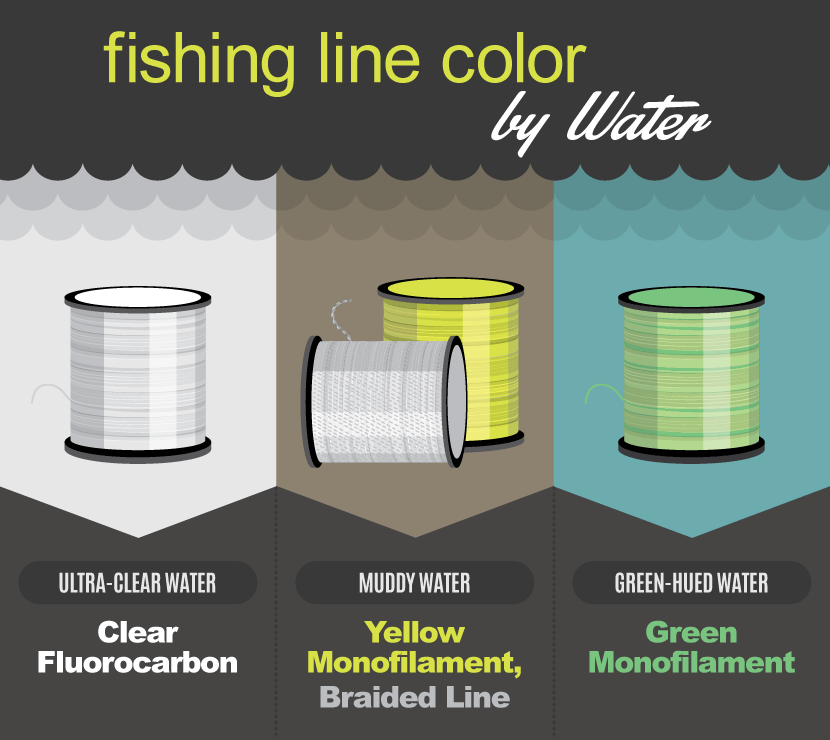
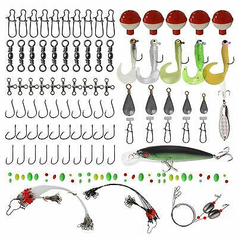
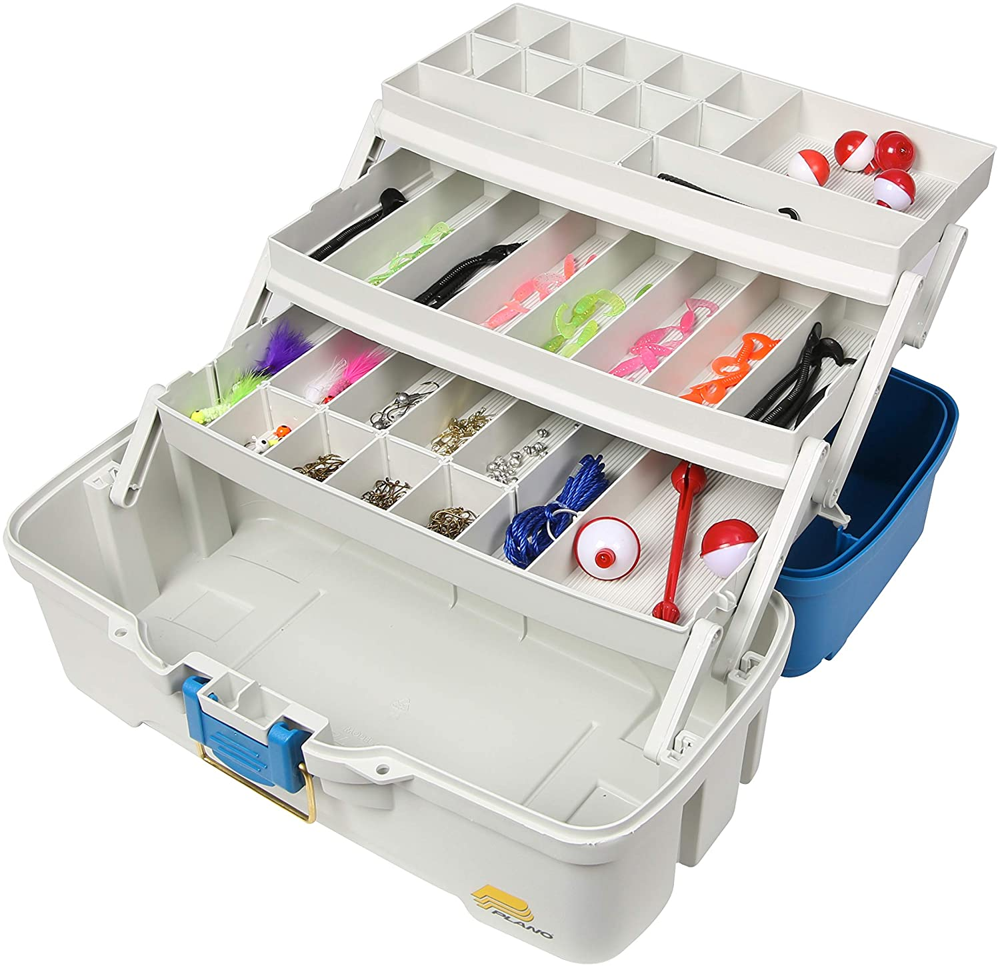
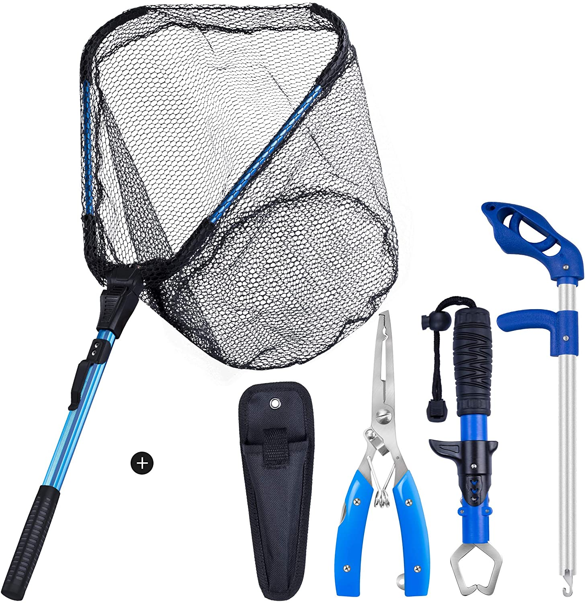

Start with a spinning rod and reel combo that’s already assembled and can cross-over from freshwater to shallow saltwater. This will take the guesswork out of the endless beginner fishing rod options available. Try a six or seven-foot medium action rod.

Rod and reel combos often come pre-spooled so you won’t need to worry about spooling new fishing line yourself. For saltwater, you may want to purchase a light leader, such as 20-pound fluorocarbon, for added strength and abrasion resistance. Learn a simple line-to-leader knot such as a double uni knot.

Tackle selection depends on the type of fishing you aim to do. You can start with a simple j-hook and cup of earthworms for beginner fishing gear simplicity. For freshwater lakes, ponds, and creeks, try soft plastic baits on worm hooks or swimbait hooks. Soft baits can be used in saltwater as well or try hard lures such as topwaters or poppers

Tackle organization will help reduce potential frustrations caused by a messy tackle box. Find a mid-sized unit with trays, pockets, and plenty of storage options.

Fishing gear for beginners can include the most sophisticated tools and contraptions, many you may not need. Stick with the essentials like a pair of needle nose pliers and a handheld line-cutter tool
